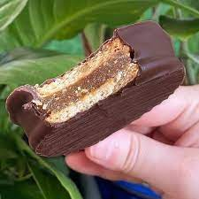
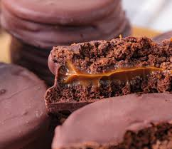

Receita de Alfajores Argentinos
Alfajores Argentinos
Alfajores recheados com doce de Leite MOÇA e banhados com Cobertura Chocolate ao Leite Garoto
Utensílios
- Batedeira
- Panela de pressão
- Forno
- Refratário
Ingredientes
- Recheio de Doce de Leite
- 1 Lata de Leite MOÇA® 395g
Massa
- 200 g De manteiga temperatura ambiente
- 1 Ovo
- 2 Gemas
- 1 Xícara (chá) de açúcar
- 5 Xícaras (chá) de farinha de trigo
- 4 Colheres (sopa) de mel
- 2 Colheres (sopa) de fermento em pó
- Meia colher (sopa) de bicarbonato de sódio
- Meia colher (sopa) de essência de baunilha
Cobertura de Chocolate
- 500 g De Cobertura Chocolate ao Leite GAROTO®
Modo de Preparo
Recheio de Doce de Leite
- 1. Retire o rótulo e o excesso de cola da lata de Leite MOÇA. Coloque-a fechada em uma panela de
pressão e
adicione água suficiente para cobri-la.
- 2. Tampe a panela e cozinhe em fogo médio por 20 minutos (contados após início da pressão).
- 3. Espere sair toda a pressão. Abra a panela e retire a lata com cuidado. Deixe-a esfriar antes de
abri-la.
- 4. Transfira o conteúdo para um recipiente. Misture para ficar homogêneo. Reserve.
Massa.
- 5. Em uma batedeira, bata a manteiga com o açúcar, o ovo e as gemas. Reserve.
- 6. À parte, misture a farinha de trigo, o mel, o bicarbonato de sódio, o fermento em pó e a essência de
baunilha. Junte à mistura de manteiga.
- 7. Trabalhe bem a massa até ficar lisa e macia. Deixe descansar por 30 minutos.
- 8. Abra com um rolo a massa entre dois plásticos-filme, deixando-a com espessura de 0,5 cm.
- 9. Com um cortador, recorte círculos de 5 cm de diâmetro.
- 10. Arrume-os em uma assadeira untada com manteiga e polvilhada com farinha de trigo.
- 11. Asse em forno médio (180 °C), preaquecido, por 8 minutos (sem dourar muito).
- 12. Retire do forno e deixe esfriar na própria assadeira, coberta com papel-manteiga.
- 13. Depois de frios, una dois discos com uma camada de doce de leite, retirando o excesso. Reserve.
Cobertura de Chocolate.
- 14. Derreta o Chocolate conforme as indicações da embalagem e banhe os alfajores um a um na Cobertura
Chocolate
Garoto.
- 15. Coloque-os sobre papel-alumínio ou papel-manteiga e deixe secar.
Dicas
- - Se quiser, embrulhe os alfajores depois de secos, um a um, em papel celofane.
- - Caso não tenha cortador apropriado, improvise com outro utensílio com medida equivalente (copo ou xícara).
- - Para manter a maciez, é importante não deixar os discos dourarem demais. Caso contrário, a massa ficará
ressecada, com aspecto de biscoito.


Imagens dos Alfajores Argentinos